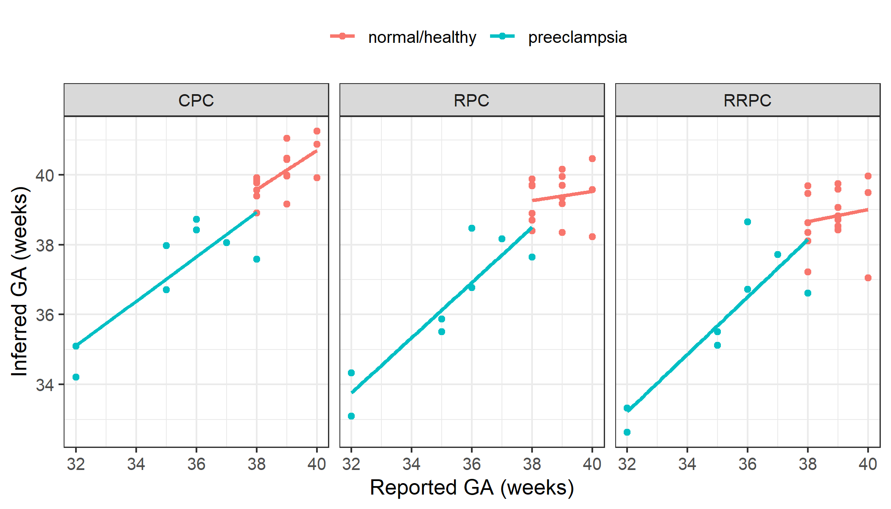

if(!requireNamespace("BiocManager", quietly = TRUE))
install.packages("BiocManager")
BiocManager::install("planet")There are 3 gestational age clocks for placental DNA methylation data from Lee Y. et al. 2019:
To predict gestational, we load the example data:
plBetas - DNAm data for 24 placental samplesplPhenoData - Matching sample informationTo use each, we can specify the type argument in predictAge.
We will apply all three clocks on this data, and add the predicted age to the sample information data.frame, plPhenoData.
plPhenoData <- plPhenoData %>%
mutate(
ga_RPC = predictAge(plBetas, type = "RPC"),
ga_CPC = predictAge(plBetas, type = "CPC"),
ga_RRPC = predictAge(plBetas, type = "RRPC")
)
#> 558 of 558 predictors present.
#> 546 of 546 predictors present.
#> 395 of 395 predictors present.Note that the number of predictors (CpGs) that were used in our data are printed. It’s important to take note if a significant number of predictive CpGs are missing in your data, as this can affect the predicted gestational age accuracy.
Next, I plot the difference between predicted and reported gestational age, for each of the 3 gestational age predictors.
plPhenoData %>%
# reshape, to plot
pivot_longer(
cols = contains("ga"),
names_to = "clock_type",
names_prefix = "ga_",
values_to = "ga"
) %>%
ggplot(aes(x = gestation_wk, y = ga, col = disease)) +
geom_point() +
geom_smooth(method = "lm", se = FALSE) +
facet_wrap(~clock_type) +
theme(legend.position = "top") +
labs(x = "Reported GA (weeks)", y = "Inferred GA (weeks)", col = "")
#> `geom_smooth()` using formula 'y ~ x'
GA: gestational age
sessionInfo()
#> R Under development (unstable) (2020-12-18 r79646)
#> Platform: x86_64-w64-mingw32/x64 (64-bit)
#> Running under: Windows 10 x64 (build 19042)
#>
#> Matrix products: default
#>
#> locale:
#> [1] LC_COLLATE=English_Canada.1252
#> [2] LC_CTYPE=English_Canada.1252
#> [3] LC_MONETARY=English_Canada.1252
#> [4] LC_NUMERIC=C
#> [5] LC_TIME=English_Canada.1252
#>
#> attached base packages:
#> [1] stats4 parallel stats graphics grDevices utils
#> [7] datasets methods base
#>
#> other attached packages:
#> [1] planet_0.99.1 tidyr_1.1.2
#> [3] dplyr_1.0.2 EpiDISH_2.7.0
#> [5] bumphunter_1.33.0 locfit_1.5-9.4
#> [7] iterators_1.0.13 foreach_1.5.1
#> [9] Biostrings_2.59.2 XVector_0.31.1
#> [11] SummarizedExperiment_1.21.1 Biobase_2.51.0
#> [13] MatrixGenerics_1.3.0 matrixStats_0.57.0
#> [15] GenomicRanges_1.43.1 GenomeInfoDb_1.27.3
#> [17] IRanges_2.25.6 S4Vectors_0.29.6
#> [19] BiocGenerics_0.37.0 ggplot2_3.3.3
#>
#> loaded via a namespace (and not attached):
#> [1] nlme_3.1-151 bitops_1.0-6
#> [3] bit64_4.0.5 filelock_1.0.2
#> [5] progress_1.2.2 httr_1.4.2
#> [7] rprojroot_2.0.2 tools_4.1.0
#> [9] doRNG_1.8.2 utf8_1.1.4
#> [11] R6_2.5.0 mgcv_1.8-33
#> [13] DBI_1.1.0 colorspace_2.0-0
#> [15] withr_2.3.0 tidyselect_1.1.0
#> [17] prettyunits_1.1.1 bit_4.0.4
#> [19] curl_4.3 compiler_4.1.0
#> [21] cli_2.2.0 xml2_1.3.2
#> [23] DelayedArray_0.17.7 labeling_0.4.2
#> [25] rtracklayer_1.51.3 scales_1.1.1
#> [27] quadprog_1.5-8 askpass_1.1
#> [29] rappdirs_0.3.1 stringr_1.4.0
#> [31] digest_0.6.27 Rsamtools_2.7.0
#> [33] rmarkdown_2.6 htmltools_0.5.0
#> [35] pkgconfig_2.0.3 sparseMatrixStats_1.3.2
#> [37] highr_0.8 dbplyr_2.0.0
#> [39] rlang_0.4.9 rstudioapi_0.13
#> [41] RSQLite_2.2.1 DelayedMatrixStats_1.13.2
#> [43] farver_2.0.3 BiocIO_1.1.2
#> [45] generics_0.1.0 BiocParallel_1.25.2
#> [47] RCurl_1.98-1.2 magrittr_2.0.1
#> [49] GenomeInfoDbData_1.2.4 Matrix_1.3-2
#> [51] fansi_0.4.1 Rcpp_1.0.5
#> [53] munsell_0.5.0 lifecycle_0.2.0
#> [55] stringi_1.5.3 yaml_2.2.1
#> [57] MASS_7.3-53 zlibbioc_1.37.0
#> [59] BiocFileCache_1.15.1 grid_4.1.0
#> [61] blob_1.2.1 crayon_1.3.4
#> [63] lattice_0.20-41 splines_4.1.0
#> [65] GenomicFeatures_1.43.3 hms_0.5.3
#> [67] knitr_1.30 pillar_1.4.7
#> [69] rjson_0.2.20 rngtools_1.5
#> [71] codetools_0.2-18 biomaRt_2.47.1
#> [73] XML_3.99-0.5 glue_1.4.2
#> [75] evaluate_0.14 vctrs_0.3.6
#> [77] locfdr_1.1-8 gtable_0.3.0
#> [79] openssl_1.4.3 purrr_0.3.4
#> [81] assertthat_0.2.1 xfun_0.19
#> [83] restfulr_0.0.13 e1071_1.7-4
#> [85] class_7.3-17 tibble_3.0.4
#> [87] GenomicAlignments_1.27.2 AnnotationDbi_1.53.0
#> [89] memoise_1.1.0 ellipsis_0.3.1
#> [91] here_1.0.1